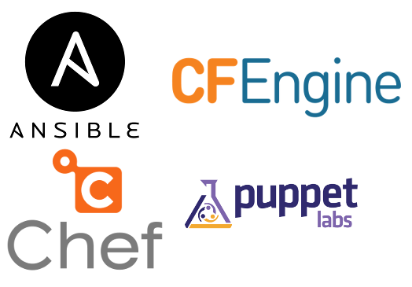

Automação e Computação em Nuvem
O futuro já chegou faz algum tempo, você está nele?
Por Hugo Cisneiros | http://www.devin.com.br
Movile: http://www.movile.com
Sobre o autor
- Trabalha com Linux há 18 anos - gosta tanto que tem até uma tatuagem do Tux
- Mexe com computação em nuvem há 5 anos
- Tem um histórico como administrador de sistemas, mas está sempre se informando sobre desenvolvimento também
Sobre a Movile
- Líder em desenvolvimento de plataformas de comércio e conteúdo móvel na América Latina
- 11 escritórios e mais de 500 colaboradores globais

A nuvem...
- Já está bem velhinha... A AWS, por exemplo, foi lançada oficialmente em 2008. Mas já existiam muitas outras nuvens antes
- Deixou infraestrutura mais prática e rápida para os SysAdmins
- Deixar uma máquina pronta para o uso antes poderia demorar horas ou dias, agora demora alguns minutos
- Automação se tornou necessária devido a essa velocidade
Nuvens públicas e privadas
- Hoje em dia é mais fácil contratar uma nuvem pública e utilizá-la para se obter um resultado mais rápido.
- Mas se sua infraestrutura é grande (por exemplo, a partir de 350 servidores), pode ser interessante criar a sua própria nuvem.
- Soluções de nuvens pública: AWS, Google Cloud, Rackspace, Azure, Digital Ocean, etc.
- Plataformas de nuvens: OpenStack, CloudStack, vCloud, OpenNebula, Eucalyptus, etc.
Trabalhando com a nuvem
Existe uma grande diferença de conceitos entre antes e depois das nuvens elásticas. Esta diferença tem sido explicada com uma analogia bem legal: animais de estimação vs. gado (pets vs. cattle).
Animais de estimação
- Você cria do zero, prepara, reserva tempo...
- Tem nomes próprios, são únicos e bem cuidados, você se lembra e cuida bem deles
- Quando preciso, você aumenta seus recursos (mais comida, mais cpu e memória)
Gado
- Não tem nomes, você só conta os números e pronto
- São praticamente todos iguais, então nenhum acaba sendo especial
- Se der algum defeito, você substitui. Se precisar de mais recursos, você coloca mais um
Para infra e operação
- Máquinas vão surgir e desaparecer e você nem percebeu
- Utilize ferramentas de infraestrutura como código, senão você se perde
- Gerencie um grupo de máquinas, e não apenas uma máquina
- Stateless!
Para desenvolvimento
- Desenvolva baseado em falhas: pense em como o sistema vai falhar, porque ele vai
- Use serviços especializados que se integram entre si para fazer algo maior (loosely coupled), com chamadas assíncronas
- Cresca sempre horizontalmente (sim, sistemas distribuídos são sempre mais difíceis de fazer)
- Stateless!
DevOps é a moda há alguns anos
- É uma cultura, culturas são difíceis e mudam de acordo com o caso
- É sobre como infraestrutura e desenvolvimento trabalham juntos
- É parte da entrega contínua de aplicações, onde todo o processo deve ser automatizado
- É infraestrutura como código
Automatizar agora é obrigatório
...a não ser que você ame o caos.

Começa simples
- Algumas máquinas rodam alguns sistemas isolados
- Um SysAdmin pra gerencia tudo
- Poucos serviços e scripts de manutenção
Vai crescendo...
- Muitas máquinas e serviços diferentes, começa a surgir a palavra padrão
- Uma equipe de SysAdmins
- Legados e sistemas novos convivendo juntos
Se torna um monstro!
- Centenas ou milhares de servidores, vários serviços entrelaçados
- Muitos SysAdmins e DevOps em diversos setores, cada um pensando de um jeito
- Dezenas de padrões diferentes O_o
Quando você se dá conta:

Ferramentas de automação
Exemplo de automação com chef
template '/etc/resolv.conf' do
owner 'root'
group 'root'
mode 0644
source 'resolv.conf.erb'
end
search example.com
nameserver <%= node['datacenter']['primary_dns'] %>
nameserver <%= node['datacenter']['secondary_dns'] %>
O arquivo /etc/resolv.conf varia de acordo com datacenter
Exemplo de automação com chef
deploy_rpm 'myservice-application' do
version '1.8.3-2'
environment 'production'
notifies :restart, 'service[myservice-application]', :delayed
end
service 'myservice-application' do
supports :status => true, :restart => true
action [ :enable, :start ]
end
Um exemplo de deploy de uma aplicação RPM em produção
Formas de deploy com automação:
Gerenciador de configuração faz tudo
- Sobe-se uma máquina com sistema operacional básico
- O gerenciador de configuração instala e configura tudo, mantém rodando
- Mudanças são feitas na automação e replicadas automaticamente para todas as máquinas com o serviço
Formas de deploy com automação:
Cria-se imagens atualizadas com tudo configurado
- É a tendência, porém é mais difícil de fazer
- Sobe uma máquina, instala e configura com a automação, e salva essa máquina como uma imagem de OS (ou container) na nuvem. Essa imagem é usada para subir o serviço
- Quando alguma mudança é feita, faz-se o passo 2, descarta-se o container ou a máquina virtual inteira, colocando no lugar uma nova instância.
Fim da apresentação!
(e começo da sua jornada)

Dúvidas? Me alcancem no meu site e email! :)
http://www.devin.com.br | hugo.cisneiros at gmail